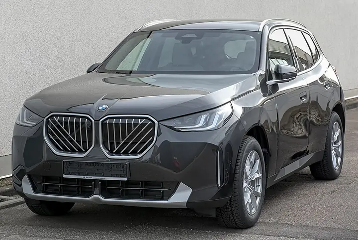
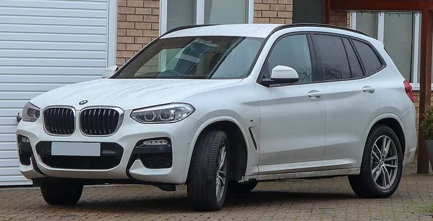
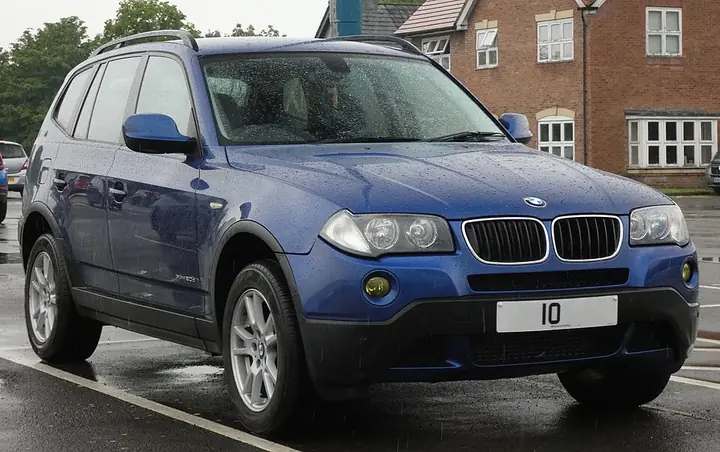

BMW X3
Fourth generation (G45/NA5; 2024/2025) · 2024–present
Abstract
This generation of the BMW X3 is a compact luxury crossover SUV, built August 2024 – present in United States: Greer, South Carolina (Plant Spartanburg), South Africa: Rosslyn (BMW SA), China: Dadong (BBA, LWB) and other plants. Body styles: 5-door SUV. Layout: Front-engine, rear-wheel-drive (sDrive). Designed by Jacek Pepłowski, Martin Simmet, Serkan Budur (exterior), Misha Klimov, Erik Melldahl (interior).


1Specifications
| Production | August 2024 – present |
|---|---|
| Model years | 2025–present |
| Assembly | United States: Greer, South Carolina (Plant Spartanburg)South Africa: Rosslyn (BMW SA)China: Dadong (BBA, LWB)Indonesia: Jakarta (Gaya Motor)Malaysia: Kulim, Kedah (Inokom)Vietnam: Chu Lai, Quang Nam (THACO) |
| Designer | Jacek Pepłowski, Martin Simmet, Serkan Budur (exterior)Misha Klimov, Erik Melldahl (interior) |
| Class | Compact luxury crossover SUV |
| Body style | 5-door SUV |
| Layout | Front-engine, rear-wheel-drive (sDrive)Front-engine, four-wheel-drive (xDrive) |
| Platform | BMW CLAR platform |
| Engine | Petrol:2.0 L B48 I4 turbo mild hybrid3.0 L B58 I6 turbo mild hybridPetrol plug-in hybrid:2.0 L B48 I4 turbo with electric motorDiesel:2.0 L B47 I4 turbo MHEV3.0 L B57D30b I6 turbo MHEV |
| Electric motor | 181 hp synchronous electric motor (PHEV) |
| Transmission | 8-speed ZF 8HP automatic |
| Battery | 19.7 kWh lithium ion (PHEV) |
| Electric range | 90 km |
| Wheelbase | 2865 mm2975 mm (LWB) |
| Length | 4755 mm4865 mm (LWB) |
| Width | 1920 mm |
| Height | 1660 mm |
| Predecessor | BMW X3 (G01) |
2Versions
- 30e
- M50
- X3 L (G48)
3Previous generations


_xDrive30d_wagon_(2018-11-22)_01.jpg){kind=link}

_Diesel_-_Montego_Blue_-_05-2024,_Front.jpg){kind=link}
4Generation by generation
Length +4% from the first to the last
E83 20034,564 mm
F25 20104,652 mm
G01 20174,708 mm
G45 20244,755 mm